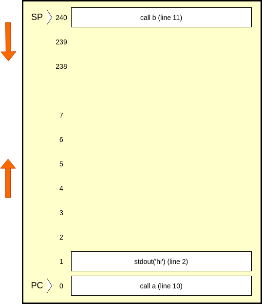
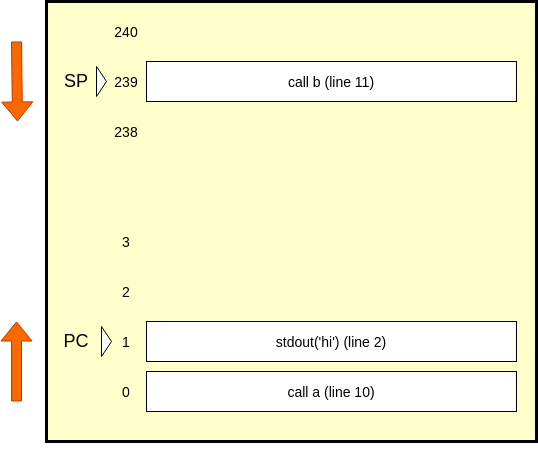
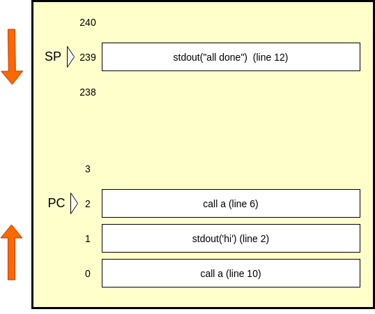

How much could one more inch hurt? We're talking about having confidence in
Javascript interviews, and what do you say when you're asked "what is node",
or "what does asynchronous mean in node." How node talks to the operating system
is explained in part 1 . Now that we know we are receiving a multiplexed stream
of events which are file descriptors ready to be read from or listened to, we
are ready to talk about what we do with those events.
Our CPU has to worry about more than just the console logs, it has to worry about the order of instructions
that it carries out. The first line it cares about is 10, and then it will want to look up the definition of
a, which really starts at line two. When it returns, we then skip to line 11. How does our CPU keep track of
that? How does it know to go back to 11?
Let's divide our system memory into two parts:

Before you get confused, here's what everything means: our memory is a zero indexed structure. We load up our
instructions starting at index 0. These instructions are similar to our javascript code, but not exactly. Call
and return get their own instructions, and beside those, we only call stdout. These are the 'real' instructions
that any human readable language gets translated into. This structure grows up, as you would expect.
Starting at index 240, we have a stack. This stack grows down, which is confusing, and means that when we push
onto the stack, we have to decrement the index which is the 'top' of the stack, which we call the stack pointer,
or SP. When we pop, we will increment it. This memory only goes to index 255, which makes it an 8 bit CPU
emulator. Above index 240, we have locations where we can store things we don't have to worry about today.
Most importantly, the index of the currently executing instruction is stored in the program counter, or PC. A part
of our flow of execution is incrementing the PC to execute the next instruction, of course unless our instruction
specifically sets the PC to something else, which we will discuss next.
The call instruction does two things.
Decrements the SP.
It pushes the return address onto the stack. This is a reference to the instruction we should execute after the
current function returns.
It sets PC to the current instruction's definition. This is really a reference to the first instruction in the
definition.
Here's what our memory looks like after we run call on line 10:

We have the SP point to line 11 in the stack, and our PC points to line 2. We execute line two, which prints 'hi' to
the user, and set PC to the return on line 3. People don't ordinarily put explicit returns at the end of void
functions, but here we are trying to be really transparent.
The return instruction
Pops the return address off the stack at the SP.
Stores the return address in the PC.
Increments the SP.
Our stack currently only has line 11 on it, so we pop it, and point the PC to it. At this point, or SP is pointing
to an empty memory[240], and or PC is at memory[239]. That instruction happens to be line 12, which is an stdout,
and our PC will point to line 6, which is another call. Here's how those two steps look.

A canvas is literally a canvas tag, which we styled using width and height. ctxBasic exposes an API which lets us
make shapes easily instead of drawing them pixel by pixel. Fill style sets a background color on the square, and
fillRect takes positional and size values. It's in the middle of the canvas because it's 175 pixels away from the
left edge of the canves, and it's 75 pixels away from the top. Its dimensions are 50 by 50 pixels.
A Grid of Rects
Now that we've made one rectangle, we can move on to make a grid of rectangles. First, we have to decide how many
rectanles and how large they should be. Given that we have a fixed width and height, how many rects we need
depends
on their size. Since our grid is 400 x 200, let's make each rectangle 10x10 so they fit evenly.
We used a nested for loop to iterate over a two dimensional array. An array which has a length of
how many blocks we have on the X axis, and each element is itself an array as long as the amount of blocks on the
y axis. Since we need to give an absolute position to fillRect, we multiply the index by the dimensional property
of each rect, and use that to position each cell correctly.
Making Grid Interactive
Since we know we need to click on squares, and toggle over an alive state, we need to take care of two things. One
is,
we need to keep track of that alive state. Two, we need to figure out how to interact with the canvas to flip our
cell
state and then reflect the change in the grid.
Aliveness could be expressed via a true or false boolean value at each position in state, and to express a
change, we
could iterate over the two dimensional state, and redraw the canvas, with blue colored rects for a live (true),
and white
for dead (false).
initState() initializes our two dimensional array state with all false values, and drawGrd() takes this and draws
white rectangles. What we need to do next is a little more difficult. Since our rects are not dom nodes that we
can listen
for a click event on, we have to change our state based on user input, then erase old state, and redraw the new
state.
What we can do is put a click event on the canvas, ask where the cursor was in aboslute terms in the window, then
change
an appropriate position in a new state. We could then erase the old board so old changes don't interfere with new
user
input, and run drawGrod on a new state.
We've added a lot of new stuff. First, we are keeping track of our left and right margins. We do this both in the
beginning
and every time the window is resized. This is because this article is centered, which means when we change the
size, the
left margin changes. We need to keep track of it to subract from pageX of our event click. We are getting aboslute
values,
but we need to turn them into relative values. We also divide this by our cell dimensions in order to get the
appropriate
index value in our state array. We do the same for the top margin because of scroll position.
In our on click, we use these positions to toggle the right cell in our state. We then use clearRect to clear our
last canvas
state, and run drawGrid() once again to reflect our changes to the user. Finally, we need to think about how to
change our state
according to the game of life rules, and reflect each change to our user, continuously.
Implementing Game Of Life
The rules for the game are simple. If a cell is surrounded by more than 3, or less thatn 2 live cells, it dies. If
it is dead,
and it has exactly 3 neighbours, it comes alive. At two neighbours, there is no change. These rules are simple,
but implemeting
them is hard. We have to think of what are our limitations.
We essentiall have two states. One is our state two dimentional array, the other is the state of the
grid. When we run
our state through the rules, and change it, there will be a difference betweem the two states. We then run
drawGrid() and make
them equal. What seems to be the problem? Let's say we are changing the state according to the rules. Killing
cells, bringing others
back to life. As we walk through the array, we are mutating it. Which affects how we evaluate later cells. We must
make our changes
in a different state.
If we change a different state, then drawGrid() based on that state, what about the next generation? There's an old
state, and a fresh
state. Let's say we run 'state' through the GOL rules, and apply changes to updateState. The next time we run,
when we apply rules
to state to change updateState, state is a generation behind updateState. We need to apply rules to the last
generation, not the
generation before last. So, after we drawGrid() on updateState, we set updateState to state and state to updateState, so now state
is the last generation, and updateState is the one before that.
Game Of Life
<canvas class="canvas-gol canvas-demo" width="400" height="200"></canvas>
<button class="start-stop">Start / Stop</button>
<h3>Game Of Life</h3>
<script>
(function () {
const canvasGOL = document.querySelector('.canvas-gol');
const ctxGOL = canvasGOL.getContext('2d');
const width = 400
const height = 200
const rectWidthHeight = 10
let marginLeft = null
let marginTop = null
let running = false
let state = [...Array(width / rectWidthHeight).keys()].map(() => [])
let updateState = [...Array(width / rectWidthHeight).keys()].map(() => [])
const initState = () => {
for (let i = 0; i < width / rectWidthHeight; i++) {
for (let j = 0; j < height / rectWidthHeight; j++) {
state[i][j] = false
}
}
}
initState()
const drawGrid = () => {
for (let i = 0; i < width / rectWidthHeight; i++) {
for (let j = 0; j < height / rectWidthHeight; j++) {
if (state[i][j]) {
ctxGOL.fillStyle = "blue"
ctxGOL.fillRect(i * rectWidthHeight, j * rectWidthHeight, width, height)
} else {
ctxGOL.fillStyle = "white"
ctxGOL.fillRect(i * rectWidthHeight, j * rectWidthHeight, width, height)
}
}
}
}
drawGrid()
const initTrackMargins = () => {
marginLeft = canvasGOL.offsetLeft
marginTop = canvasGOL.offsetTop
window.addEventListener('resize', (event) => {
marginTop = canvasGOL.offsetTop
marginLeft = canvasGOL.offsetLeft
})
}
initTrackMargins()
const initOnClick = () => {
canvasGOL.addEventListener('click', (event) => {
const positionX = Math.floor((event.pageX - marginLeft) / rectWidthHeight)
const positionY = Math.floor((event.pageY - marginTop) / rectWidthHeight)
console.log(positionX, positionY, marginLeft, marginTop, event.pageX, event.pageY)
state[positionX][positionY] = !state[positionX][positionY]
ctxGOL.clearRect(0, 0, width, height, width, height)
drawGrid()
})
}
initOnClick()
const update = () => {
for (let j = 1; j < width / rectWidthHeight - 1; j++) {
for (let k = 1; k < height / rectWidthHeight - 1; k++) {
let total = 0
total += state[j - 1][k + 1]; // top right
total += state[j][k + 1]; // middle right
total += state[j + 1][k + 1]; // bottom right
total += state[j + 1][k]; // bottom center
total += state[j + 1][k - 1]; // bottom left
total += state[j][k - 1]; // middle left
total += state[j - 1][k - 1]; // top left
total += state[j - 1][k]; // top center
// When we apply rules to state, we make changes to second array, which we will switch over
switch (total) {
case 2:
updateState[j][k] = state[j][k];
break;
case 3:
updateState[j][k] = 1;
break;
default:
updateState[j][k] = 0;
}
}
}
// Switch states
const temp = state
state = updateState
updateState = temp
}
const initStartStop = () => {
const btn = document.querySelector('.start-stop')
btn.addEventListener('click', () => {
// toggle running state
running = !running
const loopInterval = setInterval(()=>{
// if we are running, stop loop
if(!running){
console.log('not ran', running)
clearInterval(loopInterval)
return
}
console.log('ran')
// update state
update()
// clear old canvas
ctxGOL.clearRect(0, 0, width, height, width, height)
// draw update state
drawGrid()
}, 500)
})
}
initStartStop()
})()
</script>
We run the updateGrid() every 500 milliseconds in our setInterval, but if we were already running, we
clearInterval and cancel the loop. There are many ways of looping, including a recursive function that uses
setTimeout, or a simple loop that promisifies our gridUpdate function, and uses requestAnimationCallback.